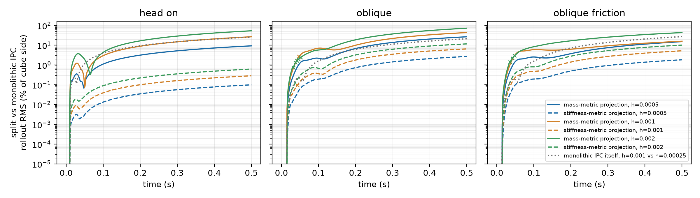
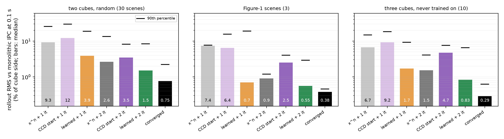

A learned contact module for Neural Modular Physics, swappable with an IPC contact projection that takes over whenever an answer fails the collision check.
Neural Modular Physics (NMP) learns elastic simulation as neural modules inside the finite-element pipeline, each swappable with its numerical counterpart, and names a collision module as the missing piece for scenes with several bodies. This project builds that module for colliding soft bodies. A graph network over surface vertices outputs contact impulses through the same interface as an IPC contact projection, and the projection stays behind it: every answer is checked for intersections and inverted elements, and the projection takes the step when the check fails.
On 43 unseen collisions of two and three neo-Hookean cubes, the module's answer is accepted on 83 to 99% of the steps with a contact force, and every rollout stays free of intersections and inverted elements. With the network's measured 2.2 ms GPU forward pass, the contact stage takes 3.1 to 7.9 times less time on average than the converged projection. The median rollout error at 0.1 s is 0.44 to 2.58% of the cube side, against 0.29 to 0.75% for the classical split; in frictionless two-cube collisions the two match (1.25 against 1.26%). Two findings set the next version. A module trained on converged projections lacks the barrier's gap feedback; exact barrier-scale distances and off-equilibrium labels restore it, without lowering the rollout error. Most of the remaining error comes from friction and shows up as post-collision spin.
One time step is split in two. An elastic prediction advances the bodies without contact; a contact stage then corrects it. The neural module and the IPC contact projection both fill the contact stage, behind the same interface.
An encode, process, decode graph network in the style of MeshGraphNets, with contact edges between bodies and an output that exchanges linear momentum exactly.
Before any learning: splitting contact from elasticity stays accurate only if the contact impulses reach the bodies through the elastic stiffness. Through the lumped mass alone (W = M) the split drifts 3 to 7% of the cube side from monolithic IPC in 0.1 s; through W = M + h²K it stays within 0.04 to 0.48% (h = 1 ms). This sets the update that the module's impulses pass through.

43 test scenes the module never saw: 30 random two-cube collisions, the three scenes above, and 10 rows of three cubes, a body count absent from training. Each scene is simulated from the same initial state by monolithic IPC, by the classical split, and by the split with the module. Two versions of the module: base, trained on converged projections, and gap-aware, with exact distances and off-equilibrium labels (section 3).
| two cubes (30) | Figure-1 scenes (3) | three cubes (10) | |
|---|---|---|---|
| Steps with a contact force where the module's answer is accepted, base / gap-aware | 83 / 84% | 94 / 99% | 91 / 94% |
| Rollout error at 0.1 s, median, % of side: base / gap-aware | 1.71 / 2.58 | 0.44 / 0.44 | 1.54 / 1.51 |
| Classical split with the converged projection | 0.75 | 0.38 | 0.29 |
| Contact-stage speed-up, base module: mean time of the converged projection ÷ mean time of the module, rejected steps included (2.2 ms GPU forward pass) | 3.1× | 7.9× | 4.7× |
Rollout error: RMS vertex distance to monolithic IPC. Rejected steps are solved by the projection and their time counts toward the module; for the base module they take most of it. Every rollout of both modules is free of intersections and inverted tetrahedra. The solver is a Python prototype on one CPU thread; the network is timed separately on the GPU.
A converged projection leaves the closest pair at its equilibrium distance, about 0.7 d̂ here. In such training data the gap barely varies, so the relative velocity can predict the impulse without it. The probe: at 189 steps of sustained contact, shift one body along its contact impulse by −0.4 to +0.8 d̂ and compare the impulse and the closest-pair distance of each answer. The projection pushes harder when the bodies start closer and returns the closest pair to its equilibrium distance from every tested start. The base module barely responds and carries 87% of the shift into its answer, so in a k = 0 rollout a gap error can persist until an answer fails the intersection check. Exact barrier-scale distances alone barely change this (impulse slope −0.13 per d̂ of shift, against the projection's −0.43); with 14,374 off-equilibrium labels added, the gap-aware module responds like the projection (−0.40).
Impulse on the shifted body
relative to the projection's impulse at no shift; median per shift over 162 to 189 of the 189 probed steps
Closest pair distance of the answer
in units of d̂ = 0.5 mm; median over steps
For both modules, aligning each body rigidly with the reference leaves 0.05 to 0.11% of the side: the k = 0 error lies in how the bodies move after the collision, while their deformation matches. Splitting the test scenes by friction locates most of it. Without friction, two-cube rollouts of the module are as close to monolithic IPC as the classical split's; frictionless three-cube rows still end about three times further away (0.71 against 0.22%). With friction the module ends 4.5 to 4.8 times further away than the split in two-cube collisions and 5.3 to 5.6 times in three-cube rows. Neither restoring gap feedback nor lowering the per-step error on the module's own rollout states (from 0.163 to as low as 0.106 across four retrained versions) lowered the two-cube rollout error: no version differs from the base module (paired over the 30 scenes, Wilcoxon p ≥ 0.39). The base module's impulse error on validation states is the same with and without friction (0.064), which points to small tangential errors that add up over a contact instead of averaging out; the rollouts show them as spin.
Rollout error at 0.1 s by friction
median RMS distance to monolithic IPC, % of the cube side; scene counts in brackets
Run a fixed number k of the projection's Newton iterations from the module's answer instead of from xⁿ, and the module becomes a learned start. IPC stopped after k Newton iterations fails at steps where contact pairs enter the barrier zone within the step, because a start without those pairs cannot see them. At contact onset the module's answer already holds most of them (median 82% of the converged active pairs), and one iteration from it finds all of them. The median rollout error drops 2.4 to 10.5 times at k = 1 and 1.6 to 1.8 times at k = 2, three-cube rows included; the converged projection stays 1.5 to 2.9 times more accurate than k = 2. Run to a tolerance, the learned start costs more: 6.6 against 5.6 Newton iterations per contact step on average for two cubes, because a minority of steps take many more.

For each group of two- and three-cube scenes, split by friction, the scene whose base-module rollout error at 0.1 s is closest to the group median; the oblique impact is the one Figure-1 scene with friction. Same layout as the video at the top, base module, slowed 16.7 times.